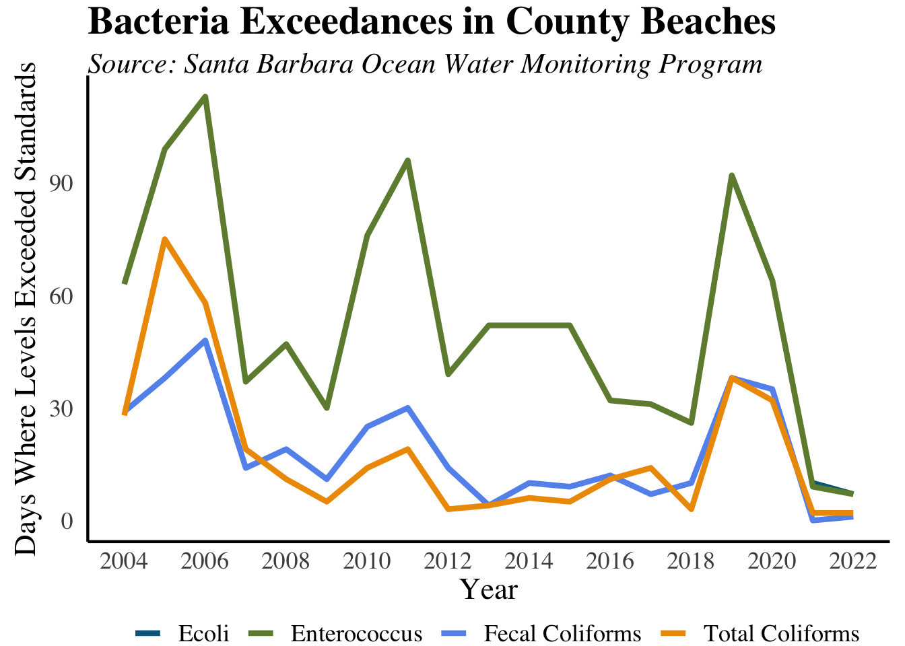

Environmental
Water Quality
Water Quality Violation Days Return to Stable Levels

What are the measures?
The number of weekly water quality tests that exceed state and federal standards for ecoli, fecal coliform, total coliform, and enterococcus. This data is from the County Ocean Water Monitoring Program, which tests ocean water near the mouth of most major creeks in the Santa Barbara County. A reading of more than 400 parts per million for fecal coliform, 104 for enterococcus, or 10,000 MPN (Most Probable Number, meaning the bacterial count per 100 mL of water) for total coliform exceeds state and federal standards, and can lead to a Department of Environmental Health Beach Advisory.
Why are they important?
The quality of water coming out of a watershed directly reflects what goes into the watershed and is an indicator of the watershed’s overall health. This not only affects the ability of residents to enjoy local creeks and beaches, but also affects the health of wildlife. In addition, unsafe beaches can adversely impact the local economy by reducing tourism.
How are we doing?
Water quality violation days remained relatively stable from 2013-2018, but 2019 saw a jump in both enteroccus and fecal coliform.The number of water quality violation days has fallen since, reaching the lowest numbers in over a decade. The amount of rainfall can significantly affect these results, as rainfall flushes bacteria and pollutants from the creeks into the ocean.
Particulate Matter Levels Increase
What are the measures?
The number of days each year that Santa Barbara County exceeded state and federal standards for PM10 and PM2.5 levels. This data comes from the Santa Barbara County Air Pollution Control District.
Why are they important?
Particulate matter is made up of fine particles in the air, such as those of dust, smoke, metal, and soot that can be harmful to humans’ lungs when inhaled. This pollutant is split up into two categories, PM10 and PM2.5. PM10 includes particles less than 10 microns in diameter and PM2.5 refers to much smaller particles that are no more than 2.5 microns in diameter. Because PM2.5 is much smaller, it can become lodged in the deepest parts of your lungs much more easily, making it a serious health threat, especially to people with respiratory diseases such as asthma and bronchitis. PM2.5 is caused primarily by vehicle emissions, burning of fuel, and wildfires. When PM2.5 is in the air there is much more caution that is necessary; when PM2.5 levels are high, people should limit outdoor exposure and exercising as much as possible. Additionally, if levels are particularly high or if one must go outside, it is beneficial to wear a mask with a filter.
How are we doing?
We almost never see PM2.5 exceedance days, but in 2017 there were 13 and 10 in 2020. In 2020, all exceedances occurred between July and October, which correlates to wildfire season in California. Being that 2020 was the largest wildfire season to date, it makes sense to see this second spike in PM2.5 exceedance days. Since then, exceedances have fallen to 0 once again.
Land Use
Energy Use Decreases
What is the measure?
The amount of electricity consumed by the Santa Barbara County for commercial, residential, and industrial purposes, measured in gigawatt hours. (One gigawatt hour equals one thousand megawatt hours.)
Mobility
Most Workers Commute Alone by Car
Why is it important?
Mobility reflects the ability of people to get from one place to another efficiently; consequentially, traffic congestion prevents this from happening. While traffic congestion has many components – including the level of non-commuter automobile use, population, the success of land-use planning, and the ability of infrastructure improvements to adapt to changes – the level of single occupancy vehicle use has a direct impact on overall traffic congestion.
Mean Commute Time Rises Marginally
What is the measure?
The average amount of time it takes a commuter in North County and South County to travel to work in 2022.
Why is it important?
Commute distances traveled can reveal much about quality of life and future trends. Changing commute patterns may indicate a greater sensitivity toward housing costs and the economy. As the distance traveled increases, so does pollution, emission levels from automobiles, and traffic congestion.
Bus Ridership Decreasing
What is the measure?
The number of bus trips taken each year in Santa Barbara on Metropolitan Transit District (MTD) buses.
Resource Use
Total Waste Disposed Sees Slight Increase
What are the measures?
The total tons of waste disposed in the Tajiguas, Santa Maria, and Lompoc landfills, as well as the amount of green waste and recycling diverted from the landfills.
Why is it important?
Waste disposal is a major form of urban pollution. Growing populations cause the total amount of waste to increase. Changes in the local economy, consumer purchasing decisions, and recycling and composting efforts also affect the amount of waste.
How are we doing?
Since 2014, the total waste disposed in the Santa Maria landfill has been steadily increasing, totaling 125,188 pounds in 2018. Similarly, the Tajiguas landfill (which serves most of the South Coast) has seen a large upward tick in total waste disposed; since 2014, total waste has increased from 175,099 pounds to 239,004 pounds in 2018. Conversely, the Lompoc landfill has seen relatively steady waste disposal levels.
California had a statewide goal of reducing solid waste by 75 percent by 2020 through recycling, composting and source reduction. 2020 saw the highest levels of green waste per capita, with 197 pounds. One possible reason for this is that people spent more time gardening and renovating residential outdoor spaces during the Covid-19 stay-at-home orders. Recycling levels have remained relatively stable since 2015, except for a decrease in 2018 to 88 pounds per capita, the lowest level in our data.
Nature
Total Bird Count Decreases in 2020
What is the measure?
The results of the Audubon Society’s annual Christmas Bird Count for four species. The bird count is designed as a measure of the diversity of bird species, but it can also be used as a rough indicator of how well bird species are thriving.
Five common species are reported - the American Crow, the California Quail, Nuttall’s Woodpecker, the Western Meadowlark, and the Wrenti. All of these species are resident birds, living in different local habitats.
Why is it important?
Bird populations are an important part of our local ecosystem, and generally reflect its overall health. Changes in the bird count can indicate changes in habitats or other shifts in the local environment. Decreased sightings of these local bird species are likely due to the loss of local chaparral and woodlands.
How are we doing?
The American Crow is consistently the species with the most sightings each year; 2013 saw the largest counts, with 2,336 sightings. Most recently, sightings were 958, a record low.
In 2015, Western Meadowlark sightings fell dramatically from 720 to 376, a 47 percent decline. This decrease is surprising considering the 129 percent increase seen from 2013 to 2014.
Similar to the Western Meadowlarks, the number of California Quails also fell by 26 percent moving from 2014 to 2015 after increasing considerably the years before. In 2020, California Quail sightings reached 340, the highest in over a decade.
Wrentit sightings have typically stayed between the range of 100-200 sightings since 2003, except for a particularly low count of 79 in 2005. Sightings have steadily increased since 2016.
Nuttall’s Woodpecker is always the least common species to be reported; the lowest number ever reported was 17 in 2005 and the most sightings was in 2013 with just 84 sightings.
Climate
Average Temperatures are Rising
What is the measure?
The average annual temperatures from 1895 - 2022 in Santa Barbara County come from NOAA’s National Centers for Environmental Information. The data includes an aggregate of the daily average temperature from January to December of each year in degrees Fahrenheit.
Why is it important?
Temperature data can assist in monitoring the local impacts of climate change over time. The data can empower our community to take meaningful action in response to rising temperatures as a result of climate change.
How are we doing?
Average temperatures have been steadily rising since 1895. In 2014, the average temperature reached its peak at 61.8°F. The top 10 highest temperatures of the data were all within the past 10 years, with the exception of 1997 (8th) and 1992 (9th). The average temperature across the data was about 57°F, which we have not seen a value below since 1975. While temperature rise is a global concern, it is important for our community to monitor its effects and take action to reduce our impact on climate change.